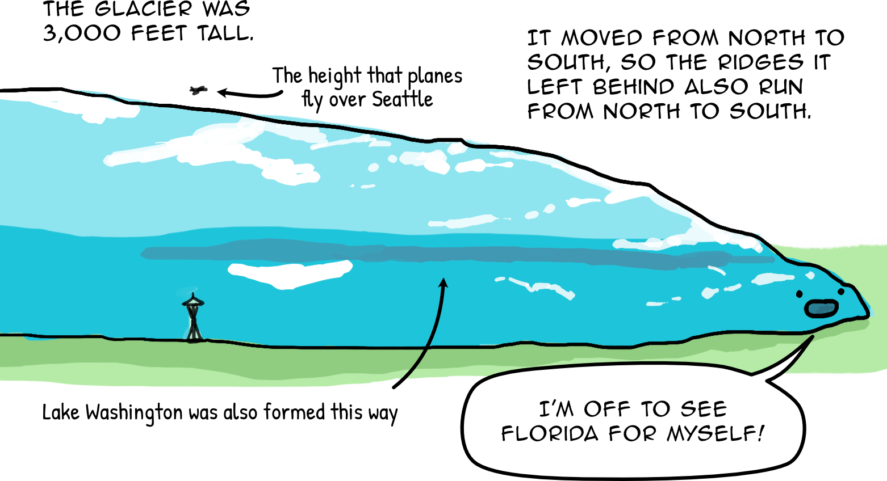

Seattle is a hilly city -- its land was carved from glaciers in the
Pleistocene ice age.

The Capitol Hill - First Hill - Beacon Hill ridge was carved from this
glacier. That's why it's harder to traverse east-west in the city: you're
going against the glacier's path.
In the early 1900s, city engineer R.H. Thompson was trying to make Seattle
more easily traversable by tearing through some of these hills. The 12th Ave
S Bridge was built in 1911 to carry traffic over the canyon that was carved.
In 1974, this bridge was renamed to the Dr. Jose P. Rizal Bridge, due to the
efforts of Seattle Filipino Americans Trinidad Rojo and Vic Bacho.


Page from the Filipino Forum, a newspaper for Seattle's Filipino community.